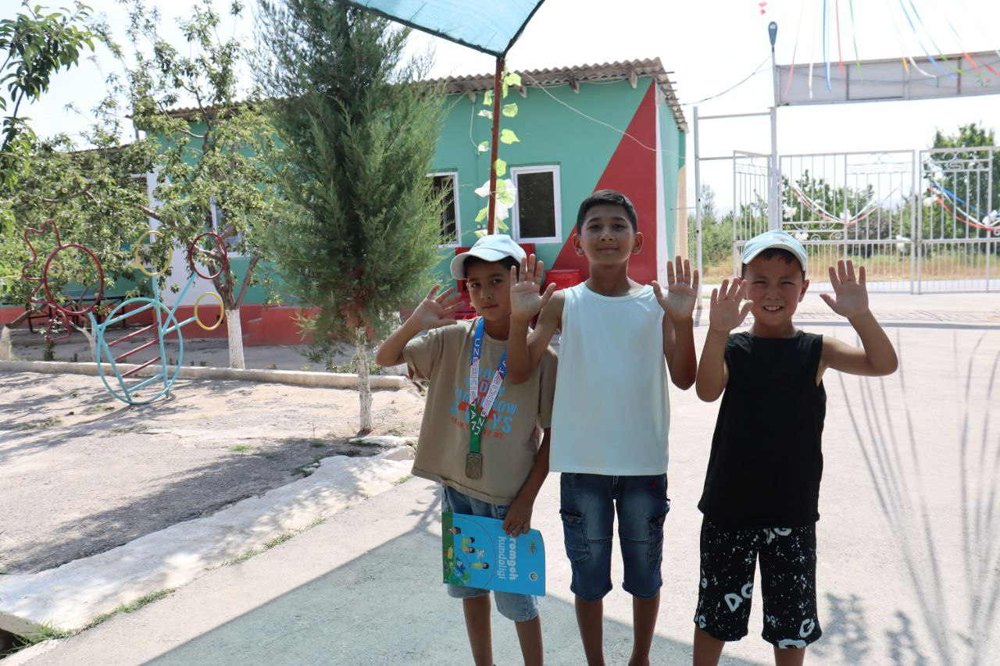
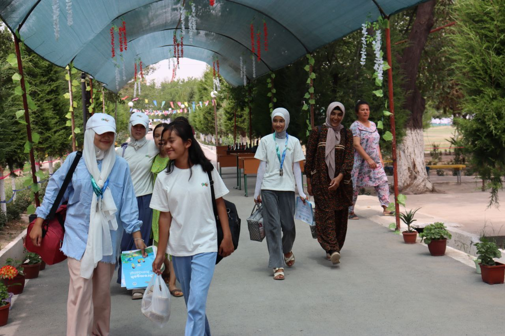
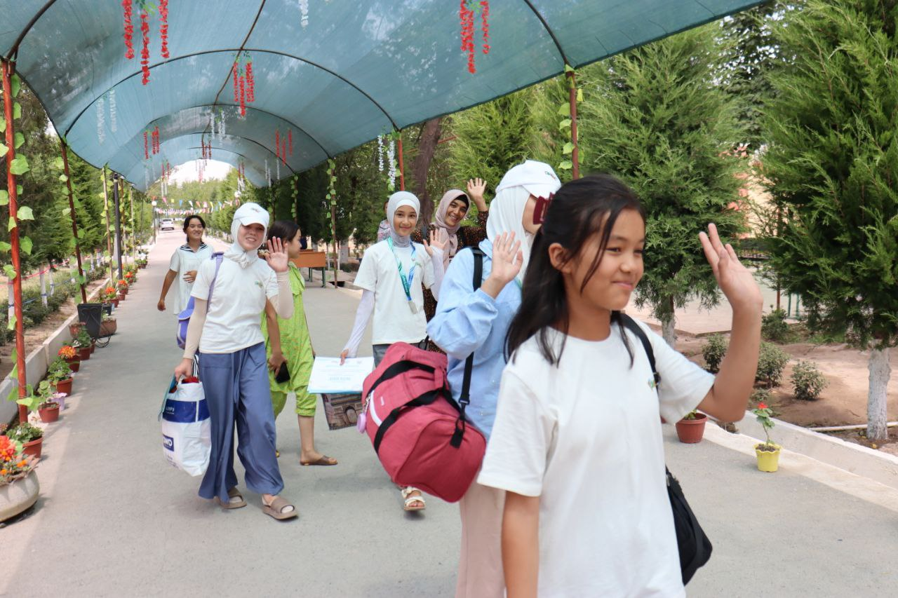
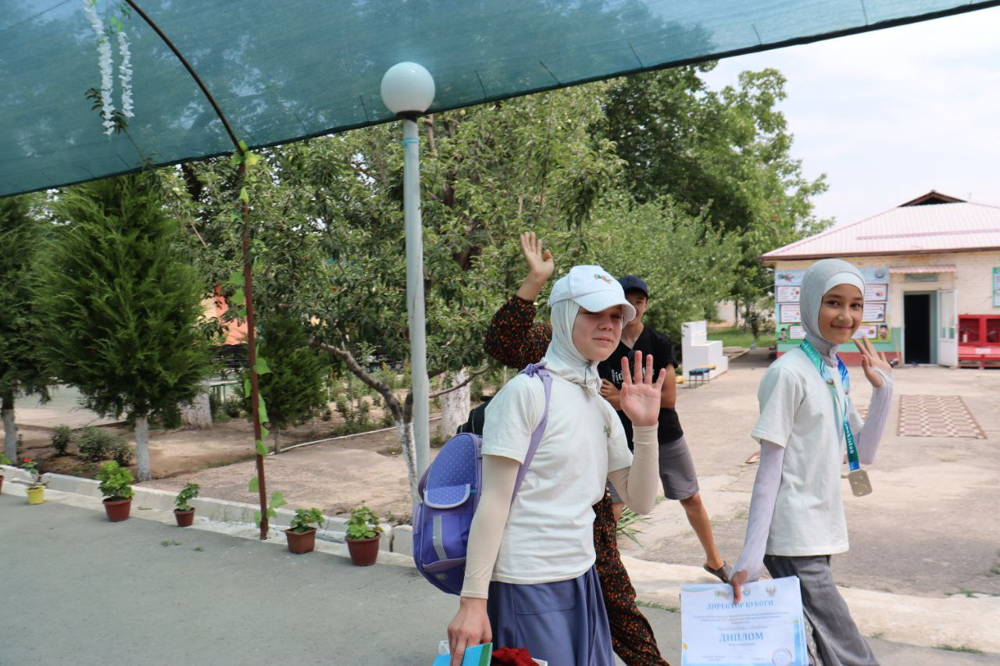
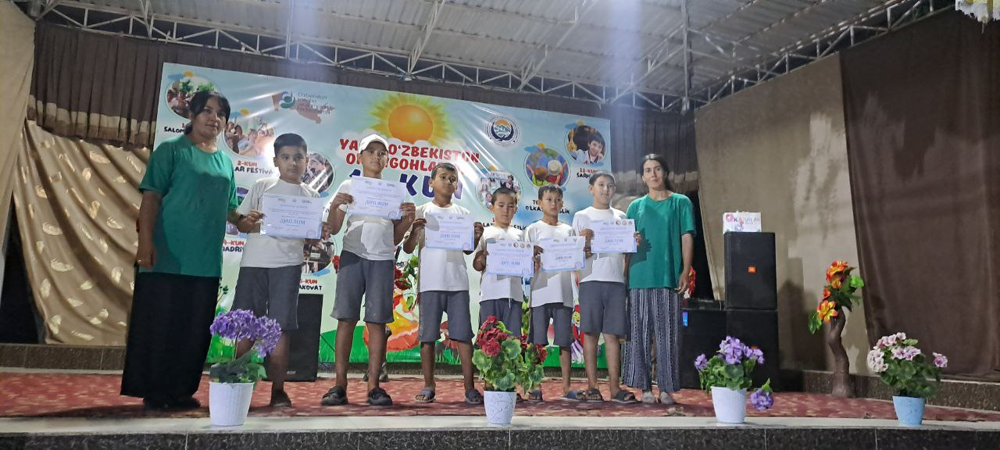
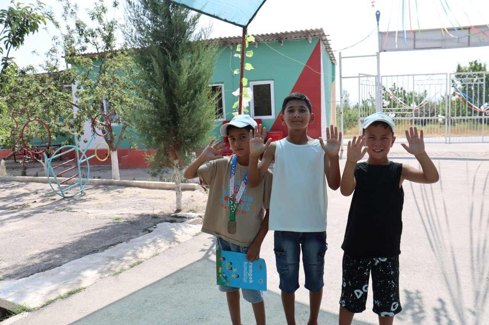
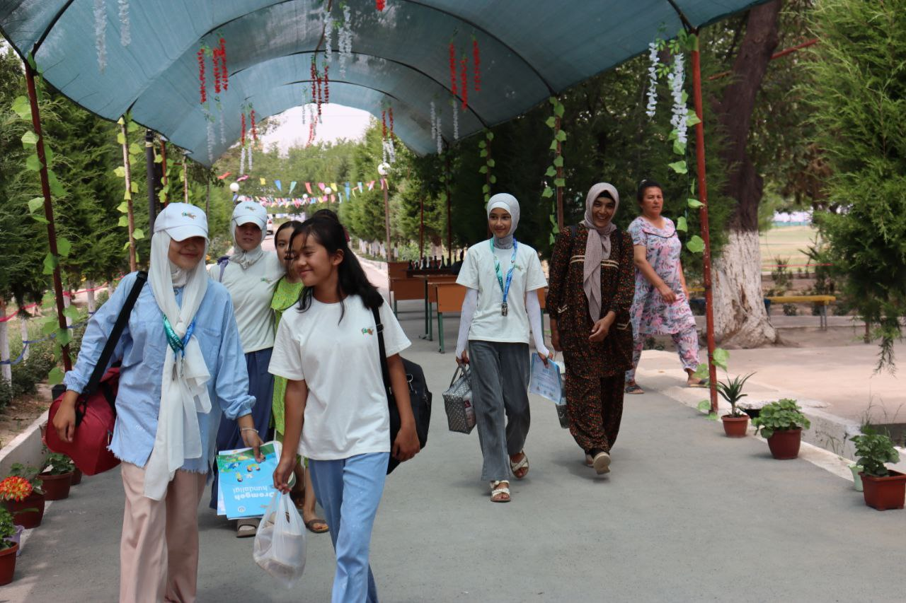
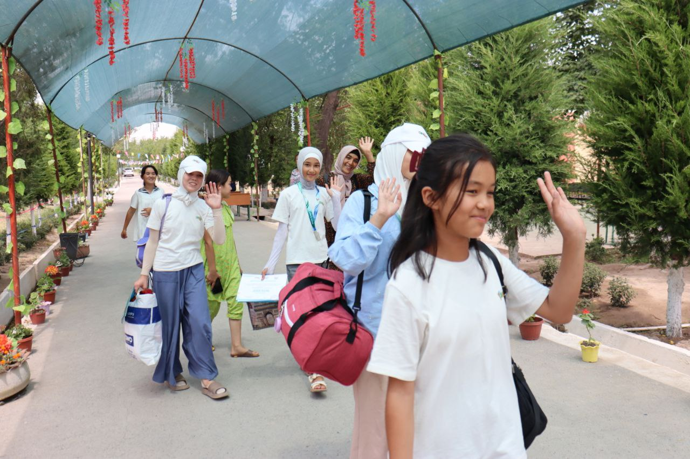
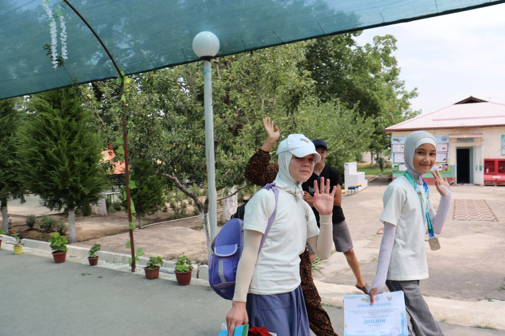
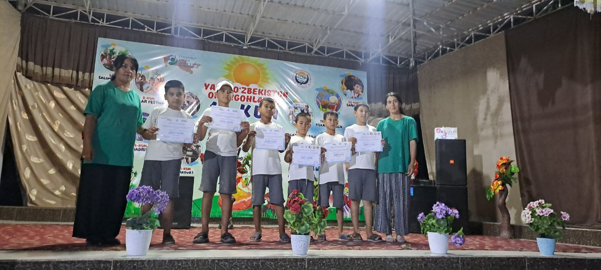

Quvasoy oromgohida 3-MAVSUMGA START BERILDI!
Quvonchli damlar, yangi doʻstlar, unutilmas lahzalar yana davom etadi! Bugun oromgohimizda 3-mavsum boshlandi. Bolajonlarimizni quvonch, kulgu va maroqli mashgʻulotlarga boy kunlar kutmoqda.
3-mavsumga xush kelibsiz! Unutilmas lahzalar va quvonchli damlar sizni kutmoqda
BatafsilQuvonchli damlar, yangi doʻstlar, unutilmas lahzalar yana davom etadi! Bugun oromgohimizda 3-mavsum boshlandi. Bolajonlarimizni quvonch, kulgu va maroqli mashgʻulotlarga boy kunlar kutmoqda.
Quvasoy BSO oromgohida har tong bolalarimiz faol va quvnoq badantarbiya mashqlari bilan boshlanadi. Toza havo, birgalikdagi jismoniy mashqlar va jamoaviy ruh – bularning barchasi oromgohimizda bolalarning sog‘lig‘ini mustahkamlashga xizmat qiladi.
Bugun oromgohimiz qizlari tabassum bilan to‘lgan chehralari va jamoaviy harakatlari bilan barchaga ijobiy kayfiyat ulashishdi. Yashil tabiat qo‘ynida, quvnoq kayfiyatda o‘tgan mashg‘ulotlar bolalarning yanada yaqinlashishiga xizmat qilmoqda.
Harbiy-vatanparvarlik kuni 🇺🇿 Bugungi kun oromgohimizda faxr va gʻurur ruhida o‘tdi. “Bayrogʻim – fahrim!” shiori ostida bolajonlarimizga Vatan, bayroq, tinchlik va jasorat haqida tushunchalar berildi.
Bugun “Quvasoy” bolalar oromgohida iliq va samimiy tadbir – “Do‘stimga maktub yozaman” deb nomlangan mashg‘ulot bo‘lib o‘tdi. Bolalar yurakdagi eng ezgu tilaklarini qog‘ozga tushirib, yaqin do‘stlariga maktub yozishdi. Maktublarda quvonch, sog‘inch, mehr va samimiyat mujassam bo‘ldi. Ayrim bolalar uzoqdan kelgan do‘stlariga sog‘inchli so‘zlar yo‘llashsa, boshqalar esa yangi tanishgan oromgohdagi do‘stlari haqida yozishdi. Bu mashg‘ulot bolalarda do‘stlik, yozma nutq va fikrni ifoda etish ko‘nikmalarini yanada mustahkamladi. Har bir maktub – mehr ila bezatilgan kichik yurak parchasidek bo‘ldi.
 








